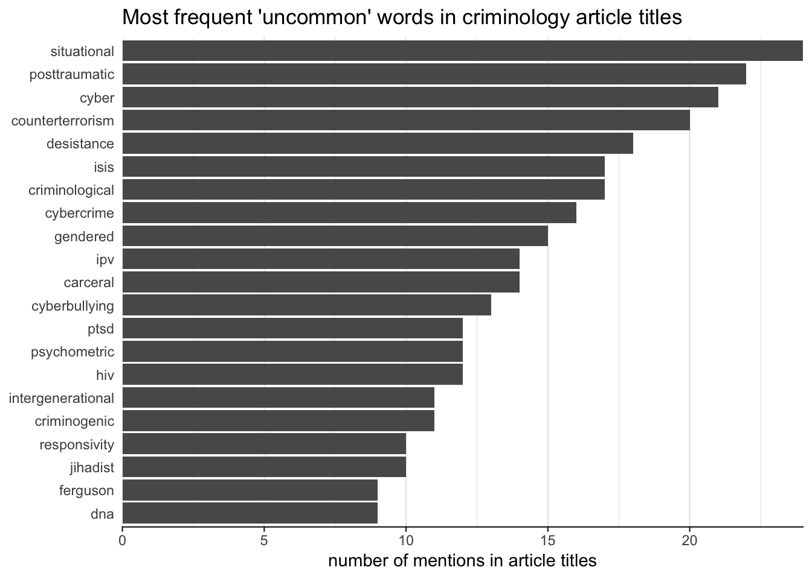

CrimPapers is a service that provides alerts on new papers published in criminology, criminal justice and related journals. Alerts are available as a daily email, weekly email, Twitter feed or RSS feed. As of the end of 2018, about 4,300 people subscribe to CrimPapers alerts in one format or another. The service is completely free: sign up or get more information.
We can use the information gathered to generate these alerts to find out more about what gets published in criminology journals. Unfortunately, journal publishers only provide very limited information about articles, so this analysis is largely based on article titles. Hopefully in future publishers will provide more information in their RSS feeds. In the meantime, this is a basic look at what got published in 2018.
As of the end of 2018, CrimPapers tracks articles in 110 criminology journals, including criminal justice, penology and terrorism. This is more criminology journals than I would ever have guessed existed before starting a list of them, yet the number is rising: Annual Review of Criminology and Justice Evaluation Journal launched this year, on top of several launches in 2017.
There were 18 publishers producing criminology journals in 2018. Three publishers (Sage, Taylor and Francis, Springer) released more than three quarters of all articles this year, while three others (University of Chicago Press, Equinox, Maklu-Online) released fewer than 10 articles each.
As well as general criminology journals such as Criminology and the various national and regional journals, there are over 80 specialist journals covering different topics. These journals can be approximately categorized as:
| Category | Journals | Articles |
|---|---|---|
| general/regional | 31 | 26% |
| criminal justice | 18 | 10% |
| policing | 11 | 10% |
| violence | 9 | 17% |
| health and psychology of crime | 8 | 6% |
| terrorism | 6 | 7% |
| gender and crime | 5 | 4% |
| sex offending | 5 | 7% |
| penology | 4 | 2% |
| other | 13 | 12% |
The number of journals focused on criminal justice, policing and penology (33 journals between the three categories) indicates the focus of criminologists on formal responses to crime. Conversely, there is only one specialist journal for crime prevention (Crime Prevention and Community Safety) and no specialist journals for topics such as crime analysis.
There are fewer journals focused on specific types of crime, but again these perhaps indicate the topics that primarily interest criminologists. Violence, sex offending and terrorism are the only crime types with more than two specialist journals. There are many common and important crime types that have only one specialist journal (such as Journal of Financial Crime) or no journals at all. Articles covering these crime types can of-course be published in general criminology journals, but authors may face the additional hurdle of editors wanting content that has general applicability. This may mean there is less of an evidence base for types of crime that are not fashionable enough to have their own journals.
In 2018 there were 4,486 different articles published in criminology journals, an average of 12 per day or 86 per week. Journal of Interpersonal Violence, published by Sage, released 452 articles during the year (an average of 38 a month), which suggests an impressive amount of editorial work.
The median journal published 29 articles during the year, with half of journals (including all of the top five by impact factor) publishing between 19 and 48 articles each.
We can explore the subjects of journal articles by looking for the most-common words and two- and three-word phrases in article titles.
| Rank | Single Words | Two-Word Phrases | Three-Word Phrases |
|---|---|---|---|
| 1 | violence (573) | book review (97) | intimate partner violence (175) |
| 2 | police (440) | criminal justice (88) | child sexual abuse (48) |
| 3 | sexual (383) | sexual abuse (87) | criminal justice system (22) |
| 4 | crime (355) | mental health (71) | body worn cameras (15) |
| 5 | justice (235) | sexual assault (70) | adverse childhood experiences (13) |
| 6 | risk (224) | systematic review (55) | childhood sexual abuse (13) |
| 7 | partner (217) | domestic violence (52) | randomized controlled trial (12) |
| 8 | intimate (215) | police officers (47) | low self control (11) |
| 9 | child (210) | sexual violence (44) | partner violence among (11) |
| 10 | social (193) | law enforcement (43) | nationally representative sample (9) |
Again we see particular focus on violence (especially intimate partner violence and child abuse) and the criminal justice system. Also evident in the two- and three-word phrases are criminological methods such as the systematic review and the randomized controlled trial. Some currently popular topics are also present, including body-worn video cameras (“body worn” appeared in 19 article titles) and adverse childhood experiences (“adverse childhood” appeared in 15 article titles).
We can also look at the words that most-often modify (i.e. appear directly before) the most-common single words:
| Most-Common Word | Most-Common Modifiers |
|---|---|
| violence | partner (182), domestic (52), sexual (44), dating (29), family (15) |
| police | among (10), national (4), exploring (3), female (3), municipal (3) |
| sexual | child (55), childhood (15), campus (8), commercial (6), harmful (6) |
| crime | organised (16), violent (16), organized (13), hate (11), collar (9) |
| justice | criminal (88), procedural (29), juvenile (19), restorative (19), youth (4) |
| risk | high (17), violence (5), dynamic (4), sexual (4), victimization (4) |
| partner | intimate (198), male (2), perpetrate (2), physical (1), psychological (1) |
| intimate | experiencing (6), physical (6), experienced (3), sexual (3), addressing (2) |
| child | among (5), parent (5), online (3), preventing (3), gender (2) |
| social | using (5), informal (3), online (2), perceived (2), policing (2) |
Looking at word co-occurrence like this mainly confirms the patterns we’ve already seen, but gives some additional information about the types of risk and justice commonly mentioned in article titles.
Some specialist journals publish large numbers of papers (Journal of Interpersonal Violence, Child Abuse and Neglect, Deviant Behavior, International Journal of Offender Therapy and Comparative Criminology and Criminal Justice and Behaviour all published more than 100 articles in 2018), which may skew the most-common topics. Restricting the search for common words and phrases to only the 31 general and regional journals produces somewhat different results. Terms that do not appear in the corresponding table for all journals are marked in bold.
| Rank | Single Words | Two-Word Phrases | Three-Word Phrases |
|---|---|---|---|
| 1 | crime (174) | criminal justice (29) | randomized controlled trial (8) |
| 2 | justice (91) | book review (19) | risk terrain modeling (7) |
| 3 | police (88) | self control (18) | intimate partner violence (6) |
| 4 | criminal (75) | crime prevention (14) | low self control (6) |
| 5 | risk (68) | substance use (11) | body worn cameras (5) |
| 6 | violence (60) | united states (11) | criminal justice system (5) |
| 7 | social (55) | mental health (10) | general strain theory (5) |
| 8 | prison (45) | money laundering (10) | situational action theory (4) |
| 9 | control (41) | procedural justice (10) | twenty first century (4) |
| 10 | theory (38) | controlled trial (8) | justice involved youth (3) |
Criminology, like all academic disciplines, uses its share of jargon. Excluding the most common 40,000 or so English words using a dictionary word list leaves only ‘uncommon’ or jargon words, the most-frequent of which are:

These mostly represent technical terms (‘post traumatic’, ‘cybercrime’) or initials (‘ISIS’, ‘PTSD’) but also some neologisms (‘responsivity’ doesn’t yet appear to have made it into dictionaries) and topical terms such as ‘ferguson’.
While it’s only a very approximate measure of article popularity, CrimPapers records whenever a subscriber clicks on an article link in an email update, tweet or RSS item. There are obviously better metrics of interest, but these tend not to be widely available (such as downloads, which not all publishers release) or slow to emerge (such as citations, which are dependent on publishing processes).
The median article was clicked on 45 times, mostly from Twitter. CrimPapers subscribers are a mixture of academics, policy professionals and practitioners, generally (as far as I can tell through an unsystematic survey of Twitter profiles) with or studying for a PhD. The 20 articles those subscribers clicked on most in 2018 were:
The top 14 articles all come from different journals, including journals that are not among what might be considered the top journals in the field. With some exceptions, popular articles tend to be on applied topics, which may reflect the the practitioners and policy professions among subscribers. In particular, the only journal to appear more than once (Policing: a Journal of Policy and Practice) was specifically established to publish research of interest to practitioners, and requires authors to submit articles with that in mind (e.g. by setting a low word limit).
For reasons of space, CrimPapers alerts consist only of the article title, the journal and a link to the full text. For example, a CrimPapers tweet looks like:
“School Variation in Offending: A Macro-Level Strain Approach” in Eur J Criminol https://t.co/zv5QBNgBjj
— Criminology Papers (@CrimPapers) December 31, 2018
For this reason, the usefulness of an article title is likely to be important in piquing the interest of readers. This is equally true for potential readers who are searching on Google Scholar or other platforms, so authors should give some thought to their title choices.
Unfortunately, not all articles have titles that facilitate interest. There are various problems with article titles, but some of the more common ones are easy to eliminate. The first is the generic title that could be applied to any article on the topic, with no indication of the article’s particular contribution. For example:
“Police Use of Body Worn Cameras” in Police Pract Res https://t.co/ohMS5TVV5t
— Criminology Papers (@CrimPapers) December 19, 2018
which could have been the title of any of the articles that mentioned ‘body worn’ in the title in 2018. The second is the title beset by academic word soup, such as:
“The Illusion of Resistance: Commodification and Reification of Neoliberalism and the State” in Crit Criminol https://t.co/CLkPSjFD2z
— Criminology Papers (@CrimPapers) October 6, 2017
or:
“The Consumption of Patriarchy: Commodification to Facilitation and Reification” in Contemp Justice Rev https://t.co/5fCRBIb8rr
— Criminology Papers (@CrimPapers) March 30, 2017
A useful rule-of-thumb here may be that a reasonably educated non-specialist should be able to read at least the article title without having to reach for a dictionary.
A related problem is titles that make enigmatic reference only to a case study or analogy that will be explained in the text but means nothing to a person reading the title (either on CrimPapers or anywhere else). For example:
“From Passengers to Crew: Introductory Reflections” in Crime Law Soc Change https://t.co/Can9IW8FK6
— Criminology Papers (@CrimPapers) July 20, 2017
or
“Justice For Ms Dhu” in Soc Legal Stud https://t.co/RYOq8DAp8Y
— Criminology Papers (@CrimPapers) October 16, 2017
In both cases these are the full article titles. Uninformative titles seem to be particularly common in special issues (there were several articles simply titled ‘Introduction’). This is probably because editors are thinking of the special issue as a single (paper bound) document, whereas readers are probably more likely to find special-issue articles in the same way they find any other article: by doing a keyword search in their favored search engine. This is particularly true now that special-issue articles are sometimes released online one-by-one as copy editing is finished. This is just one of many ways academics’ thinking about publishing hasn’t caught up with the realities of online journals.
So, what does a good article title look like? At the very least, a title should set out the subject of the study such that it can be distinguished from other related works. For example:
“Are College-Educated Police Officers Different? A Study of Stops, Searches, and Arrests” in Crim Justice Policy Rev https://t.co/OTvC7rGKoF
— Criminology Papers (@CrimPapers) December 19, 2018
Perhaps even better though is to give the answer to your question in the title. This is much more common in other disciplines, but is quite rare in criminology. When people do this, however, it’s very useful. For example:
“The Use of Victim Video Statements in Family Violence Cases Increases the Rate of Early Guilty Pleas” in J Interpers Violence https://t.co/njbKy2sFoQ
— Criminology Papers (@CrimPapers) December 18, 2018
The data used in this article are available on GitHub along with the code used to produce the tables and charts. If you have any comments or questions, please send me a tweet.